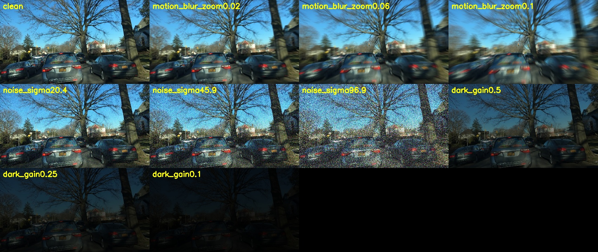
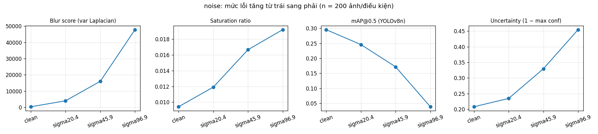

T1 · Camera degradation health score — đo khi nào ảnh camera xấu đi làm detector hỏng, và chỉ số sức khỏe ảnh nào nhận ra được điều đó.
Xe chạy nhanh → nhòe. Thiếu sáng, camera tăng gain → nhiễu, tối. Camera vẫn gửi frame, detector vẫn trả box — hệ thống không tự biết frame nào đáng tin.
Claim (giả thuyết để thử):
Mức lỗi tăng → chỉ số sức khỏe ảnh đổi theo và mAP@0.5 giảm. Câu hỏi: chỉ số nào báo trước được mAP giảm?
Đo hai lớp, cùng 200 ảnh, cùng cách tính:
NguồnBenchmarking Robustness of 3D Object Detection to Common Corruptions in Autonomous Driving
repo thu-ml/3D_Corruptions_AD @ 48c23f7
Nhóm làmdùng đúng định nghĩa severity 1/3/5 của 2 lỗi camera:
Code gốc cần imgaug + mmdet3d → viết lại bằng OpenCV. So với logic gốc: lệch tối đa 1 mức xám.
Không chạy detector 3D / KITTI → số của nhóm không so trực tiếp với số của paper.

200 ảnh BDD100K ban ngày, trời quang (seed 0, 3.026 box GT, 7 lớp) · mỗi điều kiện đổi một yếu tố · đối chiếu thêm 200 ảnh đêm thật · YOLOv8n không huấn luyện lại
| Điều kiện | mAP50 | RCE |
|---|---|---|
| sạch (baseline) | 0,295 | 0 |
| zoom blur s1 / s3 / s5 | 0,236 / 0,110 / 0,078 | 0,20 / 0,63 / 0,74 |
| nhiễu s1 / s3 / s5 | 0,246 / 0,171 / 0,039 | 0,17 / 0,42 / 0,87 |
| tối ×0,5 / ×0,25 / ×0,1 | 0,280 / 0,260 / 0,192 | 0,05 / 0,12 / 0,35 |
| đêm thật (ảnh khác) | 0,146 | — |
mAP tuyệt đối thấp vì YOLOv8n COCO chạy thẳng trên BDD100K → so sánh tương đối (RCE) trên cùng baseline.
Cùng chiều với paper Nguồn: camera-only dễ hỏng — nhưng khác detector/dataset, không đặt hai con số cạnh nhau.

Vì sao: var(Laplacian) đo năng lượng tần số cao — và nhiễu chính là tần số cao. Entropy cũng tăng (7,49 → 7,90). Giả thuyếthealth check kiểu này sẽ tăng độ tin camera đúng lúc detector gần như mù.
noise_est — Immerkær (1996): lọc bằng mặt nạ Laplacian bậc hai, triệt tiêu cạnh, chỉ giữ nhiễu.
Trung vị: sạch 0,75 → nhiễu 13,7 / 27,9 / 48,8; blur và tối đều giảm (0,30 / 0,15) → tách được nhiễu khỏi hai lỗi kia.
Cổng A: blur thấp hoặc saturation cao (ngưỡng phân vị 5 % / 95 % ảnh sạch)
Cổng B: cổng A hoặc noise_est cao
Chi phí: ~16–20 ms/frame, 1 luồng CPU, 1280×720
| Tỉ lệ gắn cờ | Cổng A | Cổng B |
|---|---|---|
| nhiễu s1 / s3 / s5 | 2,5 / 3,5 / 1,5 % | 100 / 100 / 100 % |
| zoom blur s1 / s3 / s5 | 72,5 / 99,5 / 100 % | như A |
| đêm thật | 83,5 % | 83,5 % |
| báo nhầm ảnh sạch | 9,5 % | 14,5 % |
Ngưỡng đặt trên chính 200 ảnh sạch (in-sample) → tỉ lệ báo nhầm là lạc quan.
benchmark.ipynb — notebook đã lưu outputpython src/benchmark.py --n 200 (seed 0)python src/check_s5_port.py — so với code gốc S5results/main/ — summary, per_image, plot, run_infoPython 3.10 · ultralytics 8.4.171 · opencv 4.10 · numpy 1.26 · BDD100K dgural/bdd100k
Hạn chế